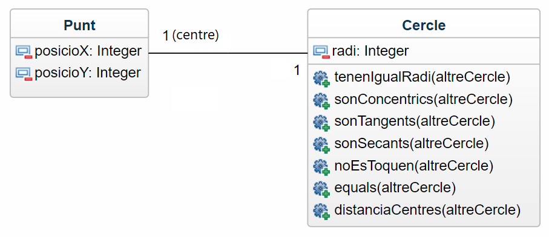

Fer una aplicació on l'usuari/ària introdueix les coordenades x, y de dos cercles i els seus respectius radis. Crear la classe Punt i la classe Cercles.
Classe Punt
La classe Punt tindrà els atributs posicioX i posicioY. A més, tindrà el constructor parametritzat amb tots els atributs de la classe.
Classe Cercle
La classe Cercle tindrà els atributs centre (un punt) i el radi (distància entre el centre i qualsevol punt de la circumferència). A més, tindrà el constructor amb tots els paràmetres i els següents set (7) mètodes:
El diagrama UML se muestra a continuación:

| Circle A (x) | Circle A (y) | Circle A (radius) | Circle B (x) | Circle B (y) | Circle B (radius) | |||
|---|---|---|---|---|---|---|---|---|
| VALUES |